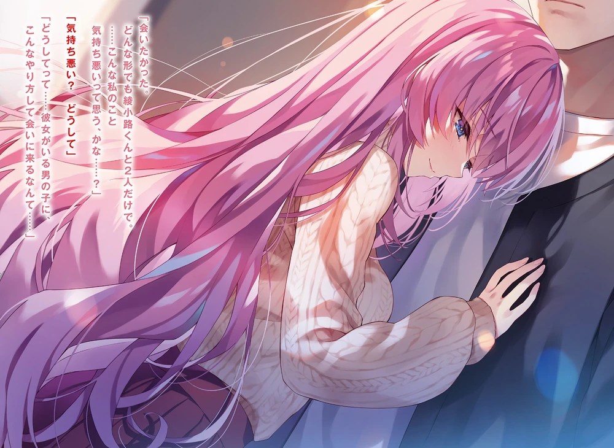

Bu sabah boş zamanımı Kei ile Keyaki Alışveriş Merkezi’nde geçirdim.
Yarınki özel sınav hakkında endişeli olsa da Kei, boş zamanını güzel geçirmişti.
Havadan sudan konuşurken, birlikte yurda geri döndük.
Dönüş yolunda telefonum çaldı.
Arayan Kanzaki’ydi.
Kei, kimin aradığını görmek için göz ucuyla baktı, arayanın Kanzaki olduğunu görünce umursamadı ve kendi telefonunu çıkardı.
Neredeyse aynı anda ikimiz de yürümeyi bıraktık ve telefonu açtım.
“Ne oldu?”
“Şu an neredesin? Odana gittim ama orada yoktun.”
“Şimdi yoldayım. Bir şey mi lazım?”
“Konuşmak için biraz zaman ayırabilir misin? Watanabe ile birlikte geleceğiz. Senin için uygun mu?”
Birinin haber vermeden odama gelmesi alışılmadık bir durumdu.
“Şimdi geliyorum. Watanabe’ye de haber verir misin?”
“Tamam. Odanın önünde bekleyebilir miyim?”
Kabul ettim ve telefonu kapattım. Aynı anda Kei de telefonunu çantasına koydu.
“Kanzaki-kun ve Watanabe-kun’la ne işin var?”
“Bilmiyorum. Konuşmak istiyorlarmış. Odamın önünde bekliyorlar. Üzgünüm ama galiba bugünü burada bitirmemiz gerekecek.”
“Sorun değil. Ama Kiyotaka, bu ikisiyle aran iyi mi?”
“Okul gezisinde Watanabe ile aynı gruptaydım. Son zamanlarda sık sık karşılaşıyoruz.”
“Bak sen! Daha fazla arkadaş ediniyorsun, demek.”
Kei, hafif bir şaşkınlık ve memnuniyetle birkaç küçük kafa sallaması yaptı.
Birlikte asansöre bindik ve dördüncü katta indik. Kapılar açıldığında Watanabe ve Kanzaki’nin bizi beklediğini gördük.
Bizi fark eden Watanabe el salladı.
“Görüşürüz. Beni kafana takma, işin bitince haber ver.”
Kei, onları arkadaş olarak gördüğü için gülümseyerek ve herhangi bir endişesi olmadığını belli ederek sıcak bir şekilde konuştu.
Barışmamızdan bu yana Kei, eski huzurunu geri kazanmış gibiydi.
“Bu ani ziyaret için kusura bakma. Yoksa birlikte vakit geçirmeyi mi planlıyordunuz?”
Bir araya gelir gelmez, Kanzaki temkinli bir şekilde konuyu açtı.
“Sorun değil. İkinizin birlikte gelmesi nadir bir durum. Buyurun, içeri gelin.”
Kapıyı açıp içeri davet ettim. Onların şaşkın bakışları, oturma odasının renkli ve kadınsı bir havaya bürünmüş hâlini inceledi.
Misafirlerimi içeri aldıktan sonra içecek tercihlerine göre mutfağa geçtim.
Çok geçmeden Kanzaki yerinden kalktı ve yanıma geldi.
“Bu ani durum için kusura bakma, ama iki kişiyi daha davet edebilir miyim? Gelmeleri kesin olmadığı için sessiz kalmam istendi, ama seninle buluşacağımı söylediğimde geleceklerini söylediler.”
“Öyle mi, kimler geliyor?”
“Ichinose ve Amikura.”
Kişi sayısının artmasıyla ilgili herhangi bir sorun yoktu, ama bu dört kişilik kombinasyonun arkasındaki durumu anlayamıyordum.
Kanzaki, Ichinose’yi ve sınıfı değiştirmek için bir reformcu olarak çalışıyordu.
Fakat, Ichinose mevcut düzeni korumak isteyen bir muhafazakâr gibiydi.
Aynı zamanda, Ichinose’nin Kanzaki’nin hareketlerinin farkında olduğu ama müdahale etmediği de açıktı.
Yoksa fazla mı anlam yüklüyordum?
Kanzaki’yi destekleyen Himeno ve Hamaguchi’den ise hiçbir iz yoktu.
“Yaklaşan özel sınavla ilgili sınıf stratejisi kararlaştırıldı ve Ichinose, seninle bazı son kontrolleri yapmak istediğini söyledi. Ama bu senin için faydalı olmayabilir.”
Sesi biraz mahcup bir tondaydı ve bugünkü meseleye pek hevesli olmadığını hissedebiliyordum.
“Benim için sorun değil. Peki ya Watanabe ve Amikura neden geliyor?”
“Watanabe tamamen tesadüfen. Ona buraya gelirken rastladım.”
“Evet, tamamen rastlantıydı.”
Amikura’nın geleceğini önceden tahmin edip ona eşlik etmiş olabilir miydi?
Yoksa fazla mı düşünüyordum?
Her halükarda, bunun pek bir önemi olmadığı için üzerine gitmedim.
Televizyonu açtım ve zaman geçirmek için bir süre sohbet ettik.
Yaklaşık 15 dakika sonra kapı zili çaldı.
Beklediğim gibi, Ichinose ve Amikura gelmişti.
Keyaki Alışveriş Merkezi’nden getirdikleri atıştırmalıklar hediye olarak yanlarındaydı.
Herkese içeceklerini verdikten sonra konuşmaya hazırlandım.
“Kanzaki-kun’dan duymuş olabilirsin, ama yarınki özel sınavla ilgili seninle bir şey konuşmak istedim, Ayanokōji-kun. Bu ani istek için kusura bakma.”
Bu, spontane bir fikirden ziyade önceden düşünülmüş bir mesele olduğunu gösteriyordu.
“Benim için bir sorun yok, ama ne yazık ki lider ben değilim. Eğer sınıfımızın iç işleri ya da stratejileri hakkında bir şey öğrenmek istiyorsanız, doğrudan Horikita ile konuşmalısınız.”
“Bu önemli değil. Biz daha çok kendi tarafımızdan bahsetmek istiyoruz.”
“Dur bir dakika. Ayanokōji’ye bir şey söylemeden önce, benim bir şey sormam lazım.”
“Ha? Nedir o?”
“Eğer iş birliği yapmak ya da buna benzer bir şey istiyorsanız, buna kesinlikle karşı çıkıyorum.”
Kanzaki, inisiyatifi ele aldı ve endişesini dile getirdi.
İki sınıfın iş birliği yapmasından bir rahatsızlık duymadığı belliydi, bu da “iş birliği” derken neyi kastettiğini anlamayı kolaylaştırıyordu.
“Tüm sınıfların puanlarını eşitlememden mi endişeleniyorsun?”
“Açık konuşmam gerekirse, evet, tam olarak bundan.”
“Neden bu konuyu sınıf toplantısında gündeme getirmedin?”
“İş birliği yapmaya karşı fikrimi dile getirsem bile, Ichinose sen kabul etsen sınıfın çoğunluğu da aynı fikirde olur. Bunun olmasını istemedim. Eğer benim haberim olmadan perde arkasında görüşmeler olsaydı, müdahale edemezdim. Ama bu konunun gözümün önünde konuşulması durumunda karşı çıkabilirdim.”
Bu yüzden şimdiye kadar bu konuyu açmaktan kaçınmış, bu meseleyi daha özel bir ortamda gündeme getirmemişti.
Eğer sınıfın reformuna yardım ediyor olsaydım, muhalefet edenlerin yanında yer alırdım. Bu, onun hesaplarının bir parçası olmalıydı.
“Özel sınav yarın değil mi? Yani şu an dört sınıfı da iş birliği yapmaya zorlamak için çok geç.”
Ichinose’nin yanında oturan Amikura, neredeyse böyle bir yorumu bekliyormuş gibi söyledi.
Sağduyuya göre bir adım atmak için çok geç olduğu kesindi.
“Normalde, evet. Ama söz konusu Ichinose olunca, birinin okuldan atılmasını önlemek için son ana kadar düşünmesini beklerim. Sınıf arkadaşlarını korumak için son anda fikrini değiştirebilir.”
“Eğer dört sınıf iş birliği yapıp net bir zafer sağlayabilirse, onun önerisi dikkate değer olabilir. Sınıf puanı kaybetsek bile, tüm sınıflar aynı kaderi paylaşırsa bu adil olmaz mı? Kanzaki-kun’un dediği gibi, bu planı gerçekleştirmek hâlâ mümkün olabilir.”
“Yine de… Eğer yükselme şansımızı kaybedersek—”
Bu tür bir gelişmeden önceden korkmuş olan Kanzaki, karşı bir argüman getirmek üzereydi ki Ichinose onu nazikçe durdurdu.
“Endişelenme. Ayanokōji-kun’dan bunu kabul etmesini istemek için gelmedim. Eğer böyle bir niyetim olsaydı, doğrudan Horikita-san ile konuşmam gerekirdi.”
Ichinose onu bu şekilde temin etti.
Ama Kanzaki yine de huzursuz olmalıydı.
Atılmaya karşı iş birliği yapmak, perde arkasında yapılan bir anlaşma olmasa bile, oldukça tanıdık bir durum gibi hissedilebilirdi.
Ichinose, kendi zararına bile olsa sınıf arkadaşlarını korumakta kararlı olursa, kazanma şansları azalırdı.
Endişesini saklamak için Kanzaki, beceriksiz bir şekilde rahatlamış bir ifade takındı.
“Bu beni rahatlattı. Aniden sözünü kestiğim için özür dilerim. Konuşmalarda çok kötüyüm. Hep sorun çıkarıyorum.”
Üzgün bir şekilde özür dilediğinde, endişelenmesine gerek olmadığını söyledim.
“Kanzaki-kun, Ayanokōji-kun’la oldukça yakın olmuşsun, değil mi?”
“Gerçekten mi?”
“Kesinlikle. Eski halin bu düşüncelere sahip olsa bile, sınıfın iç işleri hakkında bu kadar açık bir şekilde konuşmaktan çekinirdin. Eğer burada Hirata-kun ya da Kaneda-kun olsaydı, tepkilerin tamamen farklı olurdu.”
Ichinose’nin sözleri üzerine Kanzaki, anlamıyormuş gibi kafasını eğdi, ama bunun faydası yoktu. Kanzaki ve Himeno birlikte hareket etmeye başladığında Ichinose bir şeylerin ters gittiğini anlamış olmalıydı.
“Beni boş verin, konuşmaya devam edelim.”
Ichinose’nin teşvikiyle, gülümseyerek bana döndü.
“Ayanokōji-kun, Horikita-san’dan önce sana gelmemin sebebi—”
Kendisinden çok şey duyacakmış gibi hazırlandım, ama gerçekte pek bir şey yoktu.
Sınıf arkadaşlarıyla birlikte kazanmak ve kaybetmemek istiyordu—sadece samimi bir arzuydu.
Bunu dile getirmek için yakın yardımcısı Kanzaki’yi yanına alması gerekmezdi.
Konuşmalar biraz rahatladıktan sonra sohbet günlük konulara kaydı.
Watanabe sayesinde atmosfer canlandı ve bu buluşma basit bir arkadaş toplantısı gibi hissettirdi.
Saat altıyı geçip dışarısı kararmaya başladığında, Kanzaki buluşmayı bitirmeyi önerdi.
Ichinose, Amikura ve Kanzaki ilk olarak ayrıldı, ardından Watanabe.
“Bugünün nasıl geçeceğinden emin değildim, ama oldukça eğlenceli oldu.”
Bu, büyük ihtimalle Watanabe’nin Amikura ile rahatça konuşabilmesindendi.
Ona gözlerimle işaret ettiğimde, Watanabe bana geniş bir gülümsemeyle karşılık verdi.
Misafirler ayrıldıktan sonra, kapanan kapının ardında sessizlik çöktü.
O ana kadar rahatsız etmeyen televizyon aniden fazla gürültülü gelmeye başladı, bu yüzden kapattım.
Masadaki kalan bardakları kaldırmak üzereyken—
Kapı zili bir kez daha çaldı.
Kei ile henüz iletişime geçmediğim için, izinsiz gelmiş olamazdı.
Kim olabileceğini merak ettim.
Hâlâ düşünürken kapıyı açtım.
Kapının diğer tarafında, tek başına geri dönmüş olan Ichinose duruyordu.
“Üzgünüm, Ayanokōji-kun. Görünüşe göre telefonumu burada unutmuşum…”
Bir şey olduğunu düşünmüştüm ama sebebi hemen ortaya çıktı.
Görünüşe göre sadece telefonunu unutmuştu.
“Telefonun mu? Nerede olduğunu söyle, alayım.”
“Sanırım masanın altında. Gerçekten üzgünüm.”
Telefonunu unutmak, Ichinose’ye özgü bir durum değildi.
Günlük bir ihtiyaç olarak sürekli elimizde tuttuğumuz ve sıkça çıkardığımız için telefonlarımızı unutmak kolaydı.
Ama aynı zamanda, unuttuğumuzu da hemen fark edebileceğimiz bir şeydi.
Kei de sık sık telefonunu odamda unutup, panikle geri dönüp alırdı.
“Bir dakika bekle.”
Ichinose’yi girişte bırakarak masanın altını kontrol ettim.
Telefonunu, tam da oturduğu yerde, buldum.
On saniye içinde geri dönüp telefonu Ichinose’ye verdim.
“Teşekkür ederim. Tekrar rahatsız ettim, kusura bakma.”
“Görüşürüz.”
“…Ah, biraz konuşabilir miyiz?”
Zaten epey konuşmuştuk, ama kızların her zaman söyleyecek daha çok şeyi olurdu.
Şaşırmaktan çok anlayışla başımı sallayıp onay verdim.
“Bizi yalnız görenler yanlış anlayabilir, o yüzden kapıyı kilitlemeli miyim?”
Bunu kendisi önerdikten sonra kapıyı kilitlemek için döndü ama hemen ardından tereddüt etti.
“Hayır, bu iyi bir fikir değil. Eğer kapı kilitliyken biri gelirse… Bu daha da kötü olur.”
İki kişinin yalnız kalması hâlâ masum bir durumdu.
Aslında, az önceye kadar Ichinose’nin sınıf arkadaşları da buradaydı.
Ama kapı kilitli olsaydı ve sadece ikimiz burada olsaydık, durum tamamen değişirdi.
Bu, kimsenin görmesini istemediğimiz gizli bir şey yaptığımızı ima edebilirdi.
“Mako-chan ve diğerleri az önce çıktı. Telefonumu senin odanda unuttuğumu açıkça söyledim, bu yüzden biri bizi şimdi görse bile iyi bir bahanemiz var.”
Kendi kendine konuşuyormuş gibi görünmüyordu. Daha çok niyetini bana açıklıyor gibiydi.
“Telefonunu unutmuş gibi yapıp benimle yalnız kalmak mı istedin?”
Bu soruyla onu provoke etmeye çalışıp çalışmadığımı bilmiyordum, ama Ichinose sadece soruma gülümseyerek cevap verdi.
“Ne düşünüyorsun, Ayanokōji-kun?”
Gerçek niyetini bana sormasını beklememiştim.
“Şüphelerim büyük ihtimalle doğru. Telefonunu bilerek bıraktın.”
Benim cevabımı dinledikten sonra Ichinose, kendini tutamayarak başını öne eğdi ve bunu kabul etti.
“Seni görmek istedim, Ayanokōji-kun. Her ne şekilde olursa olsun, sadece ikimiz olalım istedim… Beni itici buluyor musun?”
“İtici mi? Neden böyle diyorsun?”
“Neden mi…? Çünkü sevgilisi olan bir erkeği görmek için bu kadar çaba harcadım…”
Evet, roller tersine çevrilseydi bu kolayca anlaşılabilirdi.
Hatta böyle birinin hemen ‘takıntılı’ olarak damgalanması şaşırtıcı olmazdı.
Ama sonunda, böyle bir davranışın nasıl algılanacağı tamamen hedef kişinin düşüncesine bağlıydı.
Hedeften hoşlanılmıyorsa, bir saplantıydı; ama hedeften hoşlanılıyorsa, bu saplantı sayılmazdı.
“Bir sevgilisi olan birini bu kadar cesurca görmeye çalışmak biraz garip. Ama aslında oldukça düşüncelisin.”
Eğer zorla bir ziyaret gerçekleşmiş olsaydı, Kei ile aramı düzeltmek zor olurdu ve bu yalnızca durumu daha kötü hâle getirirdi.
Eğer bu durum yaratılmışsa, o zaman ikimiz bir araya gelsek bile, bunun kaçınılmaz bir durum olduğu açıklanabilirdi.
“…Gerçekten mi? Gerçekten beni itici bulmuyor musun?”
“Hayır.”
Şu anki Ichinose’ye baktığımda aklımdan geçen tek bir şey vardı.
O, giderek daha ilginç bir figür haline geliyordu. Hepsi bu.
Hemen ardından, yavaşça yaklaşıp göğsüme yaslandı.
“Bu bir kazaydı… Ayağım kaydı ve sen beni yakaladın… değil mi?”
“Evet. Aksini kanıtlayacak bir şey yok.”
Cevap verdiğimde, göremesem de Ichinose’nin gülümsediğini hissedebiliyordum.
“Seni seviyorum, Ayanokōji-kun. Sana delicesine âşığım… Daha önce hiç âşık olmadım. Ama bunun ilk ve son aşkım olduğuna dair içimde güçlü bir his var—bu garip, değil mi?”

Ichinose’yi ilk tanıdığımda bu tür şeyler yapabileceğini hayal bile edemezdim.
Bu, karşı cins için bile çekici olan bir yöndü.
Sevgisi onun gücüydü. Kendi potansiyelini keşfederek istediği durumu yaratıyordu.
Ichinose’nin değişmeyen cömertliği.
Kanzaki ve Himeno gibi farklı aktörler hazırlayıp bu durumu karıştırmayı amaçlamıştım ama şimdi beklenenden daha fazla gelişme hattı ortaya çıktı.
Elbette bu kötü bir şey değil, aksine benim için faydalı bir durumdu.
Çünkü sınıflarını iki farklı açıdan iyileştirme fırsatı bulabilirdim.
Başlangıçta, yalnızca düz bir çizgi çizilmişti ve bu çizgi yüksek bir başarısızlık riski taşıyordu.
Başka bir çizgi çizerek sınıfın hayatta kalma olasılığını artırmayı hedeflemiştim.
Ancak Ichinose, yüksek başarısızlık riski taşıyan bu çizgiye çeşitlilik kattı.
Şimdi durum farklıydı.
Bu yeni çizgi olarak kabul edilebilecek yolun başarı mı yoksa başarısızlık mı olacağını şu anda kestirmek zordu.
Saçından gelen, tarif edilmesi zor, harika bir koku havada yayıldı.
Bu sadece şampuan ya da diğer saç ürünlerinin kokusu değildi.
“Eğer farklı sınıflarda olmasaydık, daha fazla zaman geçirebilirdik…”
O anda, bir şey oldu.
Hiç beklenmedik bir şekilde, odamın kapısı zorla açıldı.
“Üzgünüm, Ayanokōji, bana biraz kişisel tavsiye verebilir misin—”
Biraz önce bizimle birlikte oturan, B sınıfından Watanabe’nin yüzünü gördüm.
Ichinose, bu tür bir duruma karşı hazırlıklı olmalıydı.
Birisinin aniden gelip kapıyı çalabileceğini hesaba katmış olmalıydı.
Ama en azından bir kapı tıklatması beklenirdi.
Ben ise, birisinin izinsiz bir şekilde kapıyı açacağını hiç düşünmemiştim.
Bedenim, bu beklenmedik durum yüzünden gerginleşmiş olmalıydı.
Ichinose, vücuduma yapışık bir şekilde durumdan kopamayarak sadece şaşkın bir şekilde geriye baktı.
“Ne— ne—!?”
Kapıyı düşünmeden açan Watanabe, herkesten daha fazla şaşkın bir şekilde nefesini tuttu.
Gerçekten birkaç saniye, birkaç on saniye gibi geldi.
Ichinose’nin vücudunun sıcaklığı, rahat kıyafetleriyle yakın temastan dolayı hemen kayboldu.
Fiziksel teması sadece bir kaza ya da tesadüf olarak geçiştirmek imkansız olurdu.
Neredeyse düşeceği bahanesi kimseyi ikna etmezdi.
Başta durumu kavrayamayan Watanabe, ancak bu durumun sonsuza kadar sürmeyeceğini anlamış olmalıydı.
Doğal olarak, sadece ben değil, Ichinose de durumun ciddiyetini anlamış olmalıydı.
Watanabe ne gibi bir tepki verecekti?
Bu, bizim nasıl bir yol izleyeceğimizi belirleyecekti.
O anda yapabileceğim bir şey yoktu, bu yüzden sonucu ikimize bırakmak zorundaydım.
“Ah, eh, özür dilerim, kapıyı çalmadım… yani, ben gidiyorum!”
İmkansız bir durumla karşılaşan Watanabe’nin kararı, geri dönüp kaçmak oldu.
Watanabe kapıyı kapatmaya çalışırken, Ichinose daha hızlı hareket etti.
Elini kullanarak kapının tamamen kapanmasını engelledi.
“Watanabe-kun.”
“E-evet!?”
Ichinose, ona resmi bir şekilde hitap ettiğinde, Watanabe hemen düzgün bir şekilde durdu.
“İçeri gelebilir misin?”
“Ama ben rahatsız ediyorum, işim de çok önemli değil!”
“İçeri gelebilir misin? Lütfen.”
“…E-evet.”
Ichinose’nin yüzünü göremedim, çünkü Watanabe’ye bakıyordu ama döndüğünde, herkesin gördüğü o alışıldık gülümsemesiyle yüzüme bakıyordu.
Hiçbir şekilde panik ya da rahatsızlık belirtisi yoktu.
Kesinlikle, Watanabe bizi gördüğünde bir şaşkınlık yaşadı.
Ama hızla durumu toparlayıp ne yapması gerektiğine karar verdi.
Watanabe’yi girişe davet etti ve benim onayımı aldıktan sonra genkanın kapısını kilitledi.
(TL NOTU: Genkan (玄関), ayakkabıların çıkarıldığı genişletilmiş bir giriş alanıdır. Temelde, binanın ana kısmına geçmeden önce ayakkabıların çıkarılması için kullanılır.)
Daha önce kapıyı kilitleyememişti, ancak Watanabe içeride olduğundan sorun çözüldü.
Bu acil durumda bile sakin kalıp durumu yönetebilmek gerçekten takdire şayandı.
Üçümüz de girişte durduğumuzdan, alan sıkışıktı.
Ichinose ve Watanabe’yi ana odaya davet etmeye karar verdim.
Watanabe’nin gergin ifadeleri, hislerini açıkça ele veriyordu.
Ichinose ve ben oldukça sakindik.
Bizim sakin tavrımızın doğal olarak onu korkutması kaçınılmazdı.
İçerisi, televizyonu kapatmam nedeniyle, alışılmadık şekilde sessizdi.
Kendi isteğiyle oturmuş olan Watanabe, sanki hayatta değilmiş gibi görünüyordu.
“Az önce olanlar hakkında, bunu tamamen kendi isteğimle yaptım. Ayanokōji-kun’un bunda hiçbir suçu yok.”
“E-evet, tabii ki.”
“Ancak senin bu resmî konuşma tarzını pek sevdiğimi söyleyemem.”
“Ü-üzgünüm…”
“Sadece ona tek taraflı sarıldım, sen de bizi gördün, sanırım anlıyorsundur.”
Watanabe, Ichinose’nin sakin açıklamalarına sürekli başını sallayarak onay veriyordu.
“Yanlış bir şey yaptığımı biliyorum. Bunu gizli tutman için bir zorunluluğun olmadığını da biliyorum, Watanabe-kun. Ama kötü niyetle hareket eden biri olmadığını biliyorum. Bize zarar vermek için bu hikâyeyi yaymayacağına inanıyorum.”
Ichinose, onu sadece susturmaya çalışmıyordu; suçluluk duygularına hitap ediyor ve bu hisler üzerinden onu kontrol altına alıyordu.
Birini tehditle susturmak bile bu kadar etkili olmayabilirdi.
“Gerçekten üzgünüm, Ayanokōji-kun. Tamamen kendi içgüdülerimle hareket ettim.”
“Önemli değil.”
“Bunu söylediğin için mutluyum, ama Karuizawa-san bunu öğrenirse, sinirlenir… Hayır, çok üzülür. Her türlü cezaya razıyım.”
Ichinose, böyle basit bir mesele yüzünden onu cezalandırmayacağımı biliyordu.
Onun sözleri ve psikolojik analizi oldukça isabetliydi. Ancak bunu ne kadar ileri götürmek istediği başka bir meseleydi.
Samimiyeti, hesaplanmış bilgisiyle harmanlanmıştı. Bu oranı tam olarak kestiremediğim için her şeyi tahmin etmem mümkün değildi.
Bir süre sonra, oda yeniden sessizliğe büründü.
Bu sessizliğin daha fazla devam etmesine izin veremezdim.
“Her neyse, ikiniz de bugünlük eve gitmelisiniz.”
Gitmelerini söyledim.
Ichinose, bu sözleri duymayı bekliyor gibiydi ve hemen onayladı.
Ancak şaşırtıcı bir şekilde, Watanabe kıpırdamadı, kalkacak gibi de görünmüyordu.
Daha önce paniklemiş gibi görünse de, şimdi oldukça sakin görünüyordu.
Ne düşündüğünü merak ettim.
“Watanabe?”
Ona seslendiğimde derin bir iç çekti ve bakışlarını Ichinose ile benim aramda gezdirdi.
“Haksızdım. Birinin odasına kapıyı çalmadan girmek görgüsüzlüktür. Bugünkü olayı gizli tutmam için bir garanti olarak kabul edilebileceğini düşünmüyorum… Aslında geri döndüm çünkü Ayanokōji ile konuşmam gereken bir şey vardı. Bununla birlikte, ortaokul günlerimden bir hikâyeyi anlatmamda sakınca var mı?”
Watanabe’nin neden geri döndüğünü sormamıştım.
“Sanırım o zaman ben çıkıyorum.”
“D-dur. Ichinose, eğer senin için sakıncası yoksa… Hikâyemi senin de dinlemeni isterim.”
Bu ani öneriye rağmen, reddetmesi pek olası olmayan Ichinose, çıkmak üzereyken geri adım attı.
Watanabe, geçmişinden bahsederek başladı.
“Ortaokul ikinci sınıftayken kader niteliğinde bir karşılaşma yaşadım. Sınıfların değiştiği bir dönemde tanıştığım bir kızla hızlıca arkadaş oldum. Yan yana oturuyorduk—bu, ilk bağımızdı. Beni ilginç bulduğunu söyledi ve giderek yakınlaştık. Okul gezisinde aynı grupta yer aldık ve bunun kader olduğunu düşündüm.”
Bir aşk hikâyesi.
Bu, onun ilk aşkı olmayabilirdi, ancak duruşundan, bu kişinin Watanabe için önemli biri olduğu belliydi.
“Birbirimize çok yakın olduğumuz için beni sevdiğini düşündüm, ama o zamanlar her şeyden habersizdim… Ne yazık ki, o başka bir sınıftan oldukça neşeli bir çocukla çıkıyormuş. Bunu bilmiyordum, ona karşı olan hislerim daha da yoğunlaştı.”
Karşılıksız bir aşk.
Kadın ve erkek arasındaki farklılıklara rağmen, bu durumdaki insanlar benim, Kei ve Ichinose arasındaki ilişkiyle yer değiştirilebilirdi.
“Her gün onu arar ve geç saatlere kadar günlük konulardan konuşurdum—”
Bu, mutlu bir anı gibi görünmüyordu; yüzünde acı dolu bir ifade vardı.
“Ancak bir gün, telefonda gerçekten birbirimize yakınlaştık. Bana beni sevdiğini söylediğinde şok oldum. O kadar mutluydum ki… Bana ne düşündüğümü sorduğunda cevap veremedim. Sanırım, ‘Ben de seni seviyorum’ demem beş dakikamı aldı.”
Bu sözlerin ardından, ironi dolu bir kahkaha ve biraz utanma ile karışık bir kendini küçümseme ifadesi geldi.
“Daha önce başka biriyle çıkıyordu, değil mi?”
İlk düşüncem onun iki kişiyi birden idare ettiği yönündeydi, ancak Watanabe bunu reddetti.
“Hayır… Ondan daha önce ayrılmıştı. Ne zaman olduğunu bilmiyorum ama sanırım ilişkileri, benimle telefonda konuşmaya başladığı dönemlerde zaten kötüydü.”
Başka bir deyişle, tamamen yalnız kaldığında, yakın çevresinden biri olarak Watanabe’ye aşık olmuştu.
Bu, herhangi bir sorun teşkil etmeyen doğal bir olay gibi görünüyordu.
“O zamanlar onun geçmiş ilişkilerinden habersizdim, ama ‘normie’ tarafından terk edildiği için bana, ikinci sıradaki kişiye aşık oldu. Bunu bilmeden, mutluluktan havalara uçmuştum.”
Sonrasında Watanabe onunla çıkmaya başlamıştı.
Ortaokul öğrencisi oldukları için bu, herkese açık bir ilişki değil, yalnızca ikisi arasında bir sırdı.
Birbirlerine mesajlar gönderiyor ve ara sıra birbirlerinin evine gidiyorlardı.
Her şey yolunda gibi görünüyordu.
“İki kez öpüşmeyi başardık, biliyor musunuz? Ama tabii ki o başlatmıştı…”
Bu sözleri söylerken utanmaktan çok biraz mahcup görünüyordu.
Ancak kader, Watanabe’nin üçüncü sınıfa geçmesiyle değişmişti.
Sınıflar yeniden değişmiş ve o başka bir sınıfa düşmüştü.
O sınıfta ise, ilkokuldan bir erkek arkadaşı vardı ve anlaşılan bu çocuk da o kıza ilgi duyuyordu.
Bu durumun ne anlama geldiğini anlamak zor değildi.
“Sonunda—bir gün beni telefonla aradı ve ağlayarak özür diledi. ‘Üzgünüm, artık seninle çıkamayız…’ dedi. Telefonda beni sevdiğini söyleyen kız bu sefer telefonda beni sevmediğini söylemişti. Gülünç değil mi?”
Sonrasında o kız, Watanabe’nin yakın arkadaşıyla çıkmaya başlamıştı.
“Benimle olan ilişkisinin bir sır olduğunu söylemiştim. Bu yüzden yakın arkadaşım muhtemelen kötü bir niyetle yapmadı. Tabii, bilerek ve kötülük amacıyla yaptığını düşünmek de imkânsız değil.”
“Aşkta çok utangaç biriyim… Birine aşık olacağımı hiç düşünmemiştim, ama bu okula girdiğimde hemen başka birine aşık oldum…”
Watanabe’nin neşeli ve pozitif bir kişiliği vardı.
Onu her zaman aşkta utangaç biri olarak görmüştüm, ancak geçmişi insanın düşündüğünden daha derin izler taşımıştı.
“Yani, bu kadar. Aslında kimseyle paylaşmayı düşünmediğim bu utanç verici geçmişimi sizinle paylaştım. Bu yüzden bana inanmanızı istiyorum… Bugünkü olay hakkında kimseye bir şey söylemeyeceğim.”
Sırlar değiş tokuşu.
Bu, Watanabe’nin sunabileceği en iyi şeydi.
Sahip olmadığı bir kartı oynadı ve tamamen teslim olduğunu bir kez daha yineledi.
“Bugünkü konuşmamın asıl konusu… Şey, hoşlandığım bir kız hakkında olacaktı. Henüz hiçbir şey gelişmedi, ama bilirsiniz, bazen insan arkadaşlarıyla konuşmak ister, değil mi?”
Amikura bugün nasıl görünüyordu?
Beni mi izliyordu?
Hikâyem ilgisini çekiyor muydu?
Watanabe yalnızca bunları teyit etmek ister gibi görünüyordu.
“Aslında hemen geri dönmeyi planlıyordum, ancak Ichinose telefonunu unuttu ve zamanlamamı biraz erteledi… Ama kalacağını hiç düşünmemiştim…”
Elbette, bu durum Watanabe için kaotik bir hal almıştı.
Watanabe, Amikura ve Himeno’dan Ichinose’nin bana karşı bir şeyler hissediyor olabileceğini duymuştu.
Bu nedenle, o kısım onu şaşırtmayabilirdi, ancak odak noktası bu değildi.
“Hislerim tek yönlü. Bundan başka bir şey değil. Mako-chan ve Chihiro-chan’ın da Ayanokōji-kun’a aşık olduğumu bildiği bir gerçek.”
Ichinose, artık saklayamayacak gibi görünerek, bunu kendisi itiraf etmişti.
Ancak daha önce de belirtildiği gibi, bu gerçek pek iyi saklanamamıştı.
Oldukça fazla kişi tarafından bilindiği için bu, çok büyük bir sır niteliği taşımıyordu.
“Sadece bir şeyimi almak için geri döndüm ve aniden…”
“A-anlıyorum… Aniden…”
Watanabe anlamış gibi görünüyordu, ancak kesinlikle kafası karışıktı.
Bu da doğal bir durumdu.
Karşısında duran kişi Ichinose’den başkası değildi.
Onun, birine karşı bu kadar yoğun bir şekilde aşık olması, hissettiği bir gerçeği görmek ağır bir durumdu.
“Sanırım Mako-chan’dan hoşlanıyorsun Watanabe-kun.”
“N-nasıl!? N-nasıl anladın…!?”
“Bakınca hemen belli oluyor. Son zamanlarda özellikle Mako-chan’a odaklanmış durumdasın.”
Bugünkü toplanmada sadece Ichinose değil, başka birisi de bunu fark etmiştir.
Watanabe’nin bakışları ve tutkusu o kadar yoğun ve açık bir şekilde ortadaydı ki saklanması mümkün değildi.
“Mako-chan hâlâ ortaokuldan bir sınıf arkadaşını seviyor gibi görünüyor, ama aynı zamanda yeni bir aşka adım atmak istiyor. Mako-chan’ın hislerinin kime yöneleceğini bilemem, ama en iyi arkadaşı olarak sana güvenebileceğimi hissediyorum.”
Bu, Ichinose’den gelen sevgi dolu bir öneriydi.
Watanabe, geçmiş sırlarını paylaşarak bağışlanma arıyordu, ancak Ichinose bu durumu bir sigorta stratejisi uygulamak için kullanıyordu.
Amikura’nın mevcut durumuyla ilgili bilgi veriyor ve aralarındaki bağı kurabilecek bir köprü olabileceğini ima ediyordu.
Watanabe, aşkta utangaç biriydi, ancak Amikura’ya olan duyguları gerçekti.
Duyguları gerçek olduğu için, ileriye doğru adım atma cesaretine sahip değildi.
Ichinose’nin yardımına güvenebilirse, paha biçilemez bir müttefik kazanmış olurdu.
Güçlü bir dost.
Aralarındaki güven ilişkisi %100’den %120’ye çıktı.
Watanabe’nin duyguları tamamen Ichinose tarafından kontrol ediliyordu.
“G-gerçekten mi? Emin misin?”
“Tabii ki. Öncelikle, Mako-chan’la arandaki mesafeyi kapatman gerekecek.”
“Evet, haklısınız!”
Watanabe heyecanla cevap verdi.
Muhtemelen görmemesi gereken bir şeyi görmenin suçluluğunu hâlâ hissediyordu, ancak bu duygu yavaş yavaş silinecekti.
Bir aşk üçgeni.
Yasadışı bir skandal.
Bu konuyu kendiliğinden yaymaya kalkarsa, Ichinose onun düşmanı olurdu.
Bu konuyu kendine saklarsa, Ichinose onun müttefiki olurdu.
Sonuç olarak, Ichinose ve benim trajik bir aşk üçgeni yaşayıp yaşamamamızın onun kendi aşkının başarıya ulaşıp ulaşmamasıyla hiçbir ilgisi yoktu.
Tehlikeyi kontrol altında tutmak ve onu avantajın olarak kullanmak; Ichinose bunu çok iyi bir şekilde uygulamıştı.
Ichinose, Kanzaki ve diğerlerinin şüpheli bir şekilde davrandığını fark etmişti.
Kanzaki’nin reform grubundan yana olan Watanabe, burada tamamen Ichinose’nin tarafına geçmişti.
Bu, benim için alınması zor bir karardı.
Kanzaki’yi sınıfı değiştirmesi için kışkırtmayı planlamıştım, ancak Ichinose’nin benim niyetim olmadan bunu çoktan yapmaya başladığı söylenebilirdi.
Bu eylemin sınıf birliğine mi yoksa kaosa mı yol açacağını kestirmek zordu.
Bunu göz önünde bulundurarak, belki de yıl sonuna kadar bekleyip görmek için çok geç olmayacaktı.